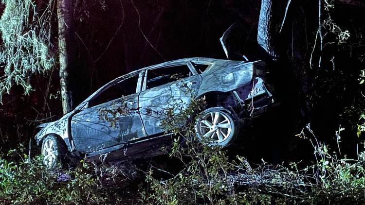

El silencio absoluto del lugar te pone los pelos de punta,
el sol se puso hace una hora cuanto mucho, y apesar de todas las luces que viste desde
el exteriror, no
parece haber ni un alma en el hotel.
Das la vuelta y regresas a tu auto, el sentimiento de
nerviosismo perdura hasta que
el hotel desaparece del retrovisor.
Conduces durante horas, pero el siguiente pueblo
parece no llegar nunca.
La carretera está cada vez más oscura y desértica.
Una curva se acerca. Vas demasiado rapido, tienes que frenar.
Pisas los frenos...no pasa nada.
Pisas los frenos una y otra vez, pero la velocidad no baja ni un poco.
En un acto de desesperacion giras el timón fuertemente pero esto causa que
pierdas el control del
vehículo, estrellandote contra un arbol.
El dolor se expande por todo tu cuerpo, no puedes gritar
por ayuda, poco a
poco tu vista se oscurece y tus párpados se hacen más pesados...
No vuelves a abrir los ojos.
